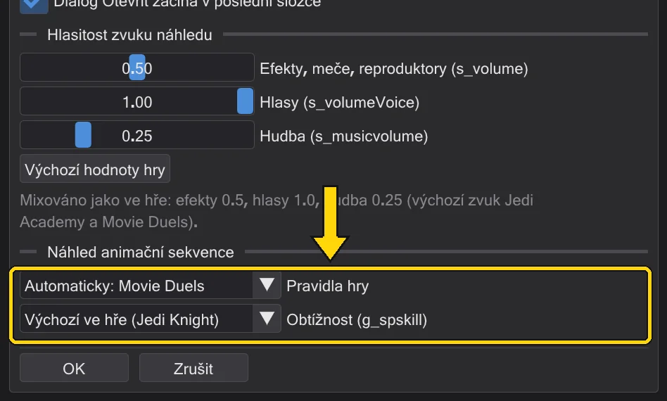

Nastavení a aktualizace
Kde program uchovává své cesty a volby, jak měnit klávesy a jak přicházejí aktualizace.
Složky hry#
Úpravy → Složky hry vypíše složky, jejichž archivy .pk3 program čte, s Nahoru, Dolů, Odebrat a Otevřít u každé. Dolní vyhrává nade vším nad ní, jako fs_game v enginu přepisuje base. Složka bez archivů to oznámí - pak je cesta špatně.

Jedi Outcast (JK2)#
JK Studio funguje i s původním Jedi Outcast. Jeho zkompilované skripty (.ibi, verze 1.57) a jeho mapy mají stejný formát jako v Jedi Academy a ICARUS má stejné příkazy. V Předvolby → Pravidla hry je Jedi Outcast (JK2) třetí sadou pravidel vedle OpenJK a Movie Duels; jejím vzorem je kód hry JK2 v OpenJK (codeJK2).
- Sada příkazů: v Jedi Outcast pocházejí seznamy animací, úkolů mise, stavů chování a polí SET_ z JK2 (
data/jk2). Z 1356 skriptů vassets0.pk3Jedi Outcast se 1352 zkompiluje zpět bajt po bajtu; kontrola zanechá 326 poznámek, což jsou skutečné chyby ve skriptech Raven. Vlastní soubor příkazů v předvolbách vždy vyhrává. - Složky hry: Jedi Outcast má vlastní seznam v Úpravy → Složky hry (Složky Jedi Outcast (.pk3)). Obě hry mají soubory se stejným názvem, ale jiným obsahem, takže se oba seznamy nikdy nemíchají; použije se seznam aktivní sady pravidel. Přidat složku hry dá složku Jedi Outcast do jejího seznamu sama.
- Automaticky: Jedi Outcast, když jsou nastaveny jen složky Jedi Outcast, nebo když se pomocí Načíst misi otevře mise Jedi Outcast (
jk2sp.exevedle složky, nebo mapy JK2 jakokejim_post). Složka Movie Duels vždy znamená Movie Duels; když není jasno, OpenJK. - Postavy: NPC pocházejí z
ext_data/NPCs.cfg, hráč jekyle(i ve skriptech), lidské postavy používají kostru JK2 se 72 kostmi a třídy NPC JK2 vybírají postavy JK2. Světelné meče nepotřebují soubor.sab: jílec a délka čepele pocházejí ze třídy NPC (Desann 48, reborni 32, všichni ostatní 40) a barva zesaberColorv NPCs.cfg. - Chůze a kamera: NPC chodí k navgoalům s navigátorem JK2: rovně, když je cesta volná, jinak po síti navigačních bodů z
maps/<map>.nav(sestavené z navigačních bodů, když soubor chybí nebo k mapě nepatří; pak se spojení zablokovaná při startu mapy znovu kontrolují každých 1.5 s jako ve hře), s rychlostmi JK2 - běh začíná plnou rychlostí, chůze zrychluje krok za krokem a NPC krátce před cílem zpomalí; NPC, které nemůže obejít jiné NPC, mu řekne, ať uhne - i takovému, které stojí bez cíle, ale nikdy hráči - a dvě NPC, která se navzájem blokují, pokračují; spojení zablokované zamčenými dveřmi, něčím rozbitným nebo jiným NPC se označí jako neprůchodné pro všechna NPC, která pak jdou jinou cestou, dokud není zase volné, jako ve hře. Zbraně pocházejí z tabulky NPC JK2, NPC Kyle bere zbraň hráče (i když ji skript mimo kameru změní, dokud Kyle nedostane vlastní zbraň) a čepel bliká jako v JK2. Kamera ukazuje FOLLOW a otřesy o jeden snímek později, ROFF kamery ignorují poznámky, bažinatá voda vyavin_swampnení pevná a déšť a sníh se řídí JK2.dowaitna SET_NAVGOAL, který nenajde cíl, čeká navždy, jako ve hře.
Předvolby#
Úpravy → Předvolby (nebo Předvolby ve sloupci akcí, Alt+P) obsahuje volby původního BehavEd a volby náhledu animační sekvence:
- Složky: Cesta ke skriptům, Soubor s popisem příkazů (
.bhc, který definuje každý příkaz - Znovu načíst model příkazů ho znovu přečte), Cesta ke zdrojovým souborům. - Při spuštění znovu otevřít poslední soubor, Abecedně řadit rozbalovací seznamy, Použít alternativní barevné ikony, Dotaz Ano/Ne při Otevřít/Nový/Konec, Dialog Otevřít začíná v poslední složce.
- Hlasitost zvuku náhledu: Efekty, meče, reproduktory (s_volume), Hlasy (s_volumeVoice), Hudba (s_musicvolume) - jako nastavení zvuku ve hře; Výchozí hodnoty hry obnoví 0.5 / 1.0 / 0.25. Jak náhled zní: Zvuk jako ve hře.
- Náhled animační sekvence → Pravidla hry rozhoduje, kterou hru náhled animační sekvence napodobuje: OpenJK (čisté Jedi Academy) nebo Movie Duels, jehož kód hry se místy liší - rychlosti otáčení NPC podle třídy a obtížnosti, jak často NPC přeřizují a otáčejí se (OpenJK každých 100 ms, Movie Duels každých 50 ms), výchozí obtížnost, střety světelných mečů, cg_fovAspectAdjust a okno hry, zvuky ROFF na postavách. Třetí volbou je Jedi Outcast (Jedi Outcast (JK2)). Automaticky vybere Movie Duels, je-li mezi složkami hry složka Movie Duels, Jedi Outcast pro složky Jedi Outcast, jinak OpenJK; seznam stavů uvede sadu pravidel při načtení mapy. Samotný poměr stran a cg_fovAspectAdjust jsou v Nastavení zobrazení → Obrazovka hry (Náhled a pohled kamerou).
- Obtížnost (g_spskill): Padawan, Jedi, Jedi Knight, Jedi Master - g_spskill hry. První položka je výchozí ve hře (Movie Duels Jedi Knight, OpenJK Padawan). Jako ve hře mění, jak rychle se otáčejí stormtroopeři, reborni a některá další NPC, jak rychle chodí a běhají tuskenští nájezdníci (od Jedi Knight) a jak blízko se musí dva světelné meče dostat, aby se střetly. Entity, které mapa označuje pro jiné obtížnosti (nebo
notsingle), se vynechají, jako je hra při načtení mapy odebere - i NPC, které skript jmenuje, ale jehož spawner je takto odebrán (affectskriptu na něj nic nedělá). Změna náhled hned znovu sestaví. - Jazyk, motiv a velikost rozhraní jsou v nabídce Zobrazení.

Změna kláves#
Úpravy → Klávesové zkratky vypíše každou akci, která má klávesu. Klikněte na zkratku a stiskněte novou klávesu; Esc zruší, Backspace vymaže. Klávesa, která už je obsazená, se uvede. Výchozí hodnoty jsou v Klávesové zkratky.
Aktualizace a seznam změn#
Nápověda → Vyhledat aktualizace se zeptá GitHubu na novější verzi a ukáže, co je nového; Stáhnout a nainstalovat nahradí soubory programu (u samostatného .exe jen program, ať má jakýkoli název souboru) a nabídne restart. Přepínač vedle rozhoduje, zda se to děje při spuštění. Nápověda → Seznam změn ukáže, co bylo opraveno a přidáno, verze po verzi, ve vašem jazyce - po aktualizaci se také jednou otevře samo.
Každá verze je rozdělena podle oblastí (editor map, editor menu, časová osa a tak dále) a každou skupinu lze sbalit. Body bez oblasti jsou pod Obecné.